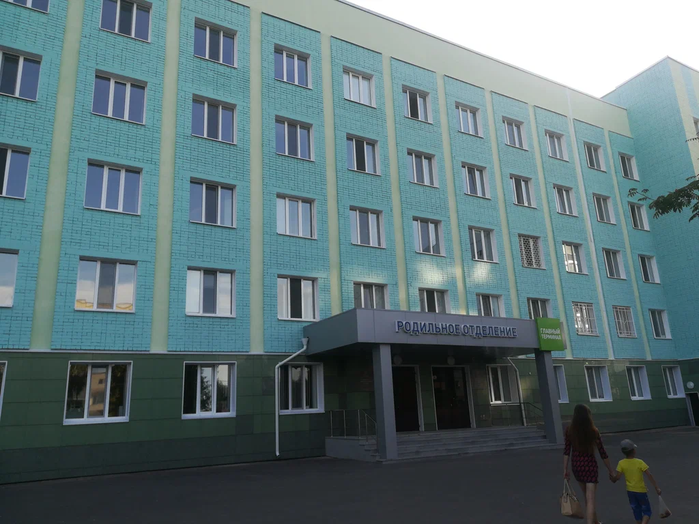
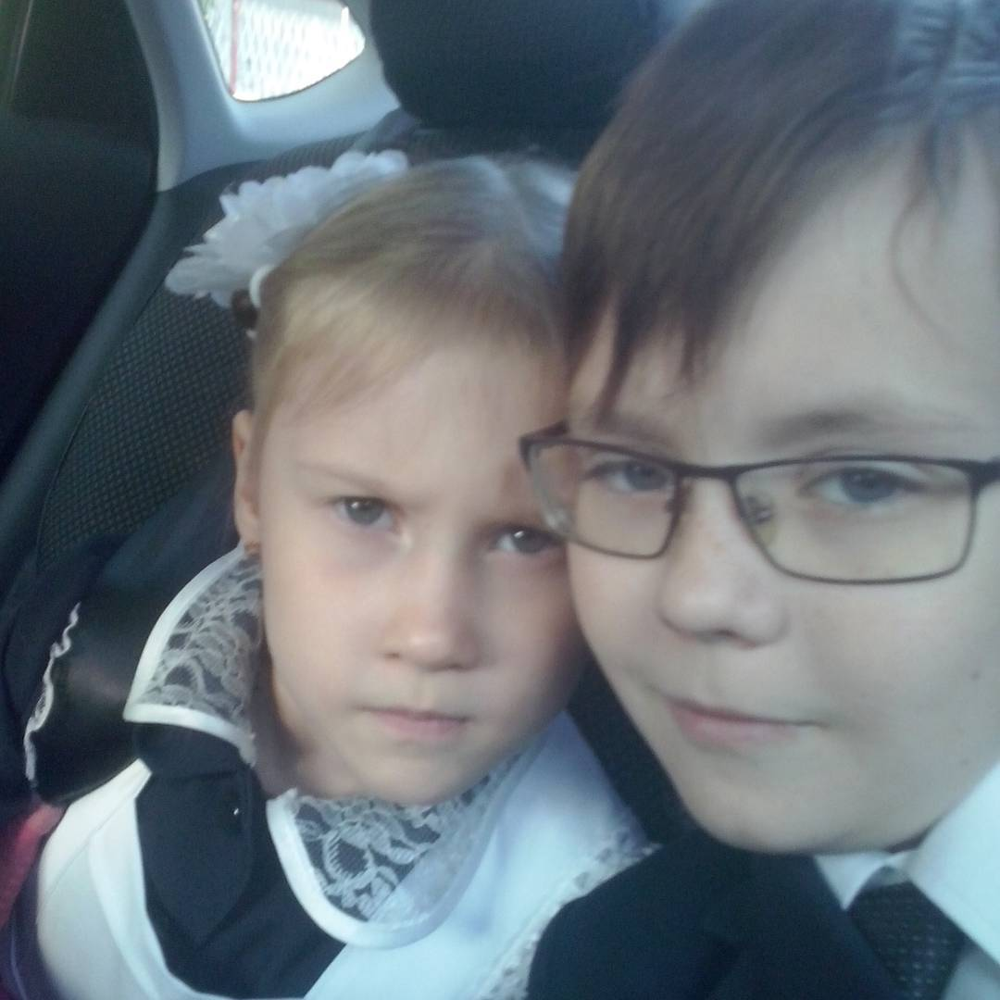
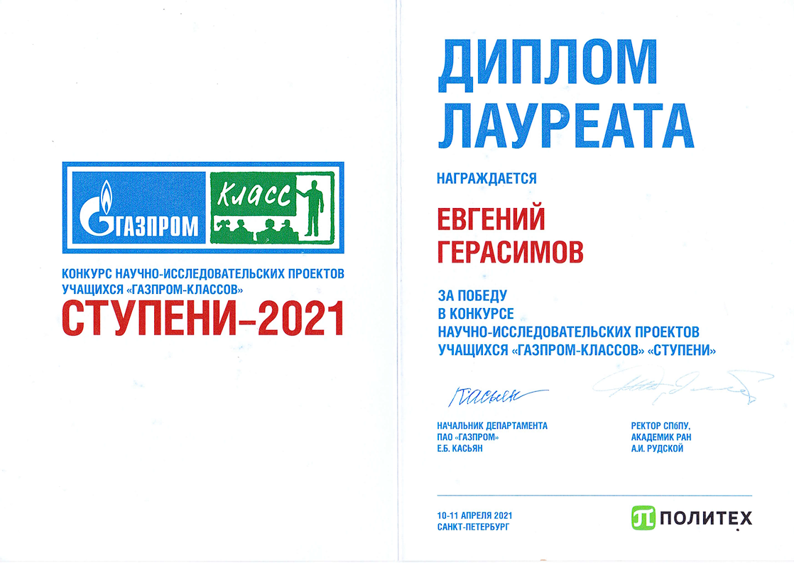

Я был рождён в городе Зеленодольск.
Это самый обычный город, оличающийся парочкой заводов.
Грубо говоря, город - "пром-зона". Spawnpoint:

Однако роды прошли не как по маслу...
С этого момента мы начинаем второй раздел моей жизни - "До 7-го класса".
До осознания
До осознания того, что в жизни нужно работать, чтобы стать кем-то значимым я жил обычной
жизнью.
Обычной
жизнью обычного школьника.

Просто картинка просто весёлого мальчика и его, не побоюсь этого слова,
пафосной сестры.
Больше фотографий вы можете найти в моём instagram:
Я учился в
лицее №9
в городе Зеленодольск. У меня было два близких друга. Мы частенько зависали*.
Учился я на 4 и 5, всё кроме русского 😅. Он мне никогда не давался...
Зависали* - гуляли после школы, собирались у кого-то с ночёвкой, etc
Я просто жил и наслаждался жизнью, пока не узнал об it-лицееСУНЦ-КФУ лицее.
Я загорелся желанием поступить туда. И, узнав, что на 3-ем этапе поступления в 7-ой класс
требуются
знания
8-ого класса
,
я начал к нему готовиться. Говорить тут не о чем.
Просто собрался и поступил.
Тогда я ещё не знал, на что иду...
IT-лицей
Если вы думаете, что ваш ребёнок это -
То смело отправляйте его в эту школу 😉. Для примера приведу расписание одного дня
по
памяти:
Внеучебная деятельность* - выбранные тобой курсы,
на которых ты делаешь проект к концу учебного года
Это может быть неточная информация, так как это было давно.
Однако что точно, так это то, что было 8 уроков в день, кроме субботы (6 уроков).
Мы ели и учились, ели и учились. На отдых "свободное время" отводились часы после
приёма
пищи.
Именно этот этап жизни дал мне понять, что в жизни необходимо много чего делать.
После года в этой школе я благополучно откатился обратно в Зеленодольск. Некоторые скажут
СЛАБО,
на что мой вам ответ
" Прежде чем начать какую-то работу, задайте себе три вопроса - зачем я это делаю,
какие могут быть результаты, и буду ли я успешным.
Только когда вы глубоко подумаете и ответите "да" на все эти вопросы, продолжайте"
Нил Армстронг
Я - это я
На вопрос почему этот раздел называется именно так я ответить не смогу.
Наверное, потому что именно в этот этап жизни я понял кем хочу быть,
какими могут быть последствия усердной учёбы, etc.
Я перешёл в обычную школу для обычных детей в Зеленодольске.
Как ни странно после предыдущей школы моей единственной оценкой стала 5.
Школа стала не более чем данность. Учиться было скучно,
всё обретённое новое - уже прошедшее старое.
И так продолжалось до 9-го класса, пока я не поступил в
Химический
лицей.
Да, да, ещё одна очередная школа для одарённых детей.
Но именно с ней у меня связаны самые приятные школьные воспоминания.
У меня появилось много друзей, я победил в нескольких конкурсах.
Смешной пример - это конкурс СТУПЕНИ.
Вот могли бы вы когда-нибудь поверить, что человек,
написавший проектную работу Разработка термопластичного каучука
на основе бутадиен-нитрильного каучука и abs-пластика,
заинтересуется программированием? Конечно нет, но я живой пример
тому доказательство.

Стал лучшим выпускником газпром класса 2022
за что получил яндекс станцию макс и поступил в университет ИТМО.
ITMO
Сейчас же я обучаюсь в университете ИТМОVITMO>.
Подводить выводы по обучению ещё рано, а комментировать обучение я не буду.
Нет, не потому что мне страшно. Я бы мог повесить лапшу на уши,
но зачем? ИТМО действительно крутой университет,
однако воистину интересным он становится если у тебя есть свободное время.
Было бы круто когда-нибудь сходить на ITMO ENTER, ITMOTION NIGHT, etc. Но, как говориться,
что позволено Юпитеру,
то не позволено быку
Всем спасибо, кто прочитал мой сайт! Обязательно найдите пасхалку!